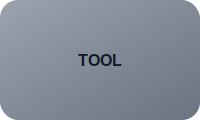

⛏ MC
Tools
Home
Tools
🌙
Tools
🟢 Server Status Checker
Check

SERVER STATUS
Check any Minecraft server status including players and version.
GO
MOTD GENERATOR
Create colorful Minecraft MOTDs with live preview.
GO
JSON VALIDATOR
Validate and format JSON configuration files.
GO
YAML VALIDATOR
Fix plugin configuration errors instantly.
GO